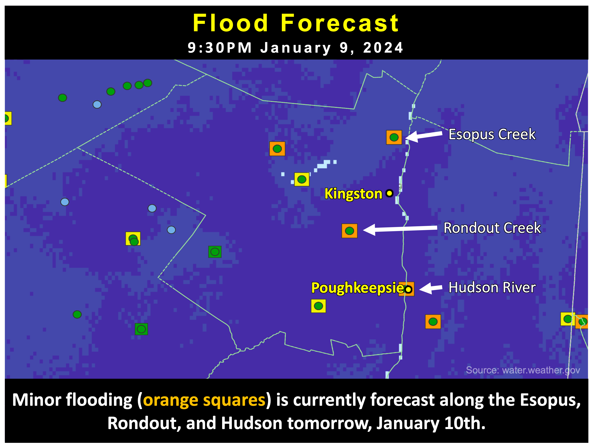
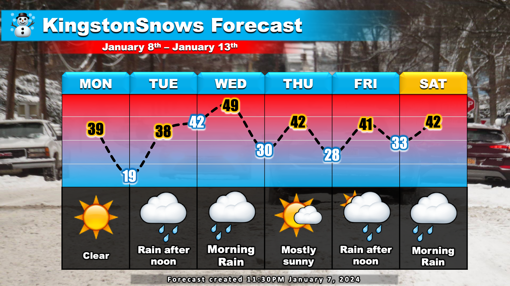
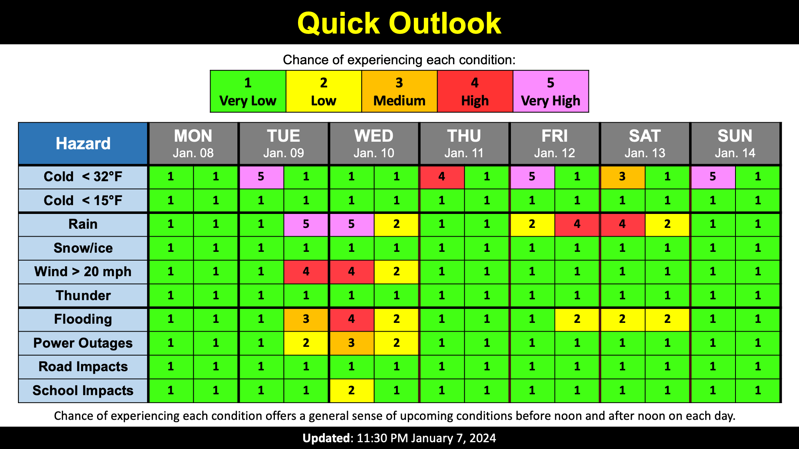

Warning: this is an old update that has been archived. This update is not current.
Yet another winter flood event
School Forecast
for Wednesday January 10th
Last updated: 9:30PM Tuesday January 9, 2024
| 40% (Medium) |
|---|
| 60% (Medium) |
|---|
| 0% (Nope) |
|---|
___________________
9:30PM Tuesday Update
The highly impactful storm that was discussed in the last post is now upon us. This storm is currently bringing high winds, flooding rain, and accumulating snow to various parts of New York. Here in eastern Ulster County, the main concern over the next 12 to 24 hours is flooding, downed tree limbs, and power outages. As a result, the Kingston City School District has already issued a two-hour delay for Wednesday, and could possibly upgrade to a closing.

Flood Threat
Rain will continue through about 5AM Wednesday. Currently, a total of 1 to 2 inches of rain is expected. For perspective this is on par with our
December 10-11, 2023 rain event that dropped 2.25 inches in Ulster County. The forecast is less than the December 17-18, 2023 rain event that gave us
3.55 inches. The December 17-18th event resulted in enough flooding for Kingston to close schools while the December 10-11 event had no school impacts. Snow melt will also
contribute to possible flooding as the wet snow on the ground currently contains the equivilent of about 1 to 2 inches of rain water if it all melts. Currently,
minor flooding is forecast along the Esopus and Rondout creeks as well as along the Hudson River. For all three waterways, minor flooding is forecast although none
are forecast to be as high as during the December 18th flooding.
Wind Threat
The National Weather Service is currently forecasting wind gusts as high as 30 to 40 mph for the Kingston area through 4AM. However, based on observations from
the New York State Mesonet system, wind gusts around Kingston have been limited to 15 to 20 mph so far. This is due to the Catskills largely blocking gusty winds from
reaching the ground around us. Meanwhile, areas all around us, including western Ulster County, Greene County, Columbia County, and even parts of Dutchess and Orange
counties have seen wind gusts from 30 to 50 mph today. We will see if higher winds materialize around Ulster County, but the relative wind-shadow that we are in is likely
to persist.
Overall, flooding and power outages are a valid concern for tomorrow. School districts will evaluate the storm damage tomorrow and make their decisions about cancelling or delaying classes. Right now it is pretty much a 50/50 on which way they go. Due to both the Esopus and Rondout creeks being forecast to experience minor flooding all day tomorrow, and the Hudson being forecast to reach its peak flooding tomorrow around 10AM tomorrow, along with the potential for some power outages tonight, I have opted to skew the probabilities slightly toward a cancellation - although it really is a 50/50 on whether or not the current delay actually gets upgraded.
___________________
11:30PM Sunday Update
Our first snowstorm of the season has now departed the region. Kingston picked up a grand total of about 10 inches of snow between 7PM Saturday and 2PM Sunday. Local snow reports ranged from 7 to 14 inches. As anticipated, the majority of this snow fell during a very intense snowband that moved through the region between 10PM and 3AM last night. Kingston currently has a "Snow Emergency" that remains in place until 7AM tomorrow. Due to ongoing storm clean up across the region, school delays are possible tomorrow. Our very active weather pattern will continue this week.

The Forecast:
Clear skies on Monday will give way to increasing clouds Tuesday morning. A potent storm currently over the southwestern states will approach
us on Tuesday. Rain willl develop Tuesday afternoon. Steady rain, heavy at times Tuesday night, eventually tapering off Wednesday morning.
Currently, 2 to 3 inches of rain is expected Tuesday into Wednesday. Skies will clear again Thursday before yet another mainly rain storm approaches
on Friday. Temperatures will run above normal this week. Daytime high temperatures will run in the 40s while low temperatures generally fall into the 30s.
The Impacts:
The main concern for this week is flooding Tuesday night into Wednesday. Soil analysis suggests that the ground is currently more than 85% saturated
in Ulster County. In eastern Ulster, including Saugerties, Kingston, and Highland the ground is more than 95% saturated. This combined with inevitable
snowmelt will create favorable conditions for flooding. With 2 to 3 inches of rain expected to fall Tuesday night, localized flooding is a concern for Wednesday.
In addition to flooding, winds during the mid-week storm may gust as high as 40 mph, so isolated tree damage and power outages are a concern Tuesday night.
Next Update:
Tuesday
-Ethan

KingstonSnows | Kingston, New York
Website built by Ethan Burwell